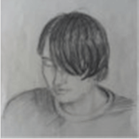

Who is he?
 Здравствуйте, меня зовут Вишневский Андрей Владимирович. Мне 30 лет.
Да, да, предвижу вашу реакцию - "Как 30?!". Поэтому сделайте глубокий вдох и выдох, досчитайте от 10 до 1, продолжайте читать дальше.
Закончил я Иркутский государственный университет, факультет "Сервиса и рекламы", а моя специальность по диплому "специалист по рекламе", т.е. образование у меня гуманитарное.
И тут я опять слышу слова легкого удивления и сарказма. "Как гуманитарное?!". Но снова глубокий вдох, считаем от 10 до 1, и продолжаем читать.
Несмотря на это, html-версткой (html, css, js) и другими штучками в ИТ я заинтересовался именно в университете. Полученных в вузе знаний для меня было недостаточно, так разыгрался аппетит, поэтому я решил пройти дополнительный курс по веб-разработке. Он включал в себя более детальное изучение js, а так же основ php, SQL и С++ для души. Напомню, я гуманитарий.
Применить полученные знания я не успел, т.к. пошел куда?! Правильно, в вооруженные силы РФ. Да, да, глубокий вдох, ну, дальше вы сами знаете, что делать.
Вернувшись из армии, мне пришлось многое повторять и многое учить самому, например, JQuery и AJAX. Это было необходимо, т.к. требования к верстальщику/frontend-разработчику уже включали обязательное использование этих технологий и им подобных.
Конечно, в это же время я активно рассылал свои резюме и выполнял тестовые задания, чтобы получить соответствующую должность. Но как-то все мимо, а обеспечивать себя хотелось уже здесь и сейчас. Поэтому устроился я работать на должность, которая к ИТ не имела никакого отношения, предполагая, что по вечерам буду усиленно заниматься и позже обязательно вернусь. Но я не думал, что это займет столь длительный срок (от 4-5 лет). И, как можно догадаться, верстка и разработка ушли для меня на второй план.
Тем не менее, год или около того, я снова начал активно изучать сферу ИТ в целом, и верстку в частности.